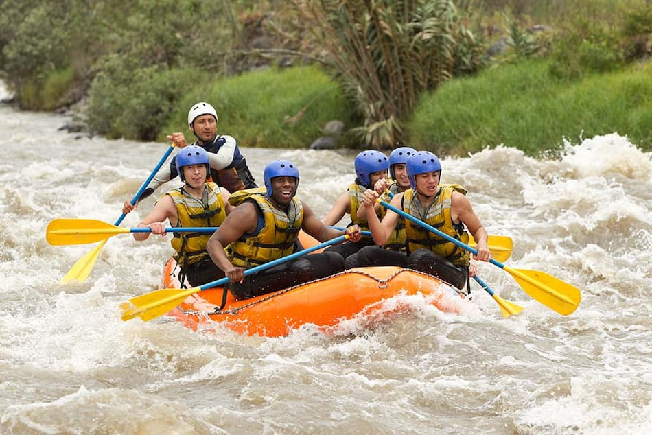

Our Vision
Austina founded Dry Oar with one goal: to blend high-adrenaline adventure with environmental stewardship. We believe the river is a gift, and we are here to share its power with you while preserving it for the generations to come.

Austina founded Dry Oar with one goal: to blend high-adrenaline adventure with environmental stewardship. We believe the river is a gift, and we are here to share its power with you while preserving it for the generations to come.
Starting in 2010 with just two guides and a dream, Austina expanded Dry Oar from a local startup to the Grand Canyon's premier eco-tour provider. Today, we lead over 500 expeditions annually, focused on safety and local conservation.
